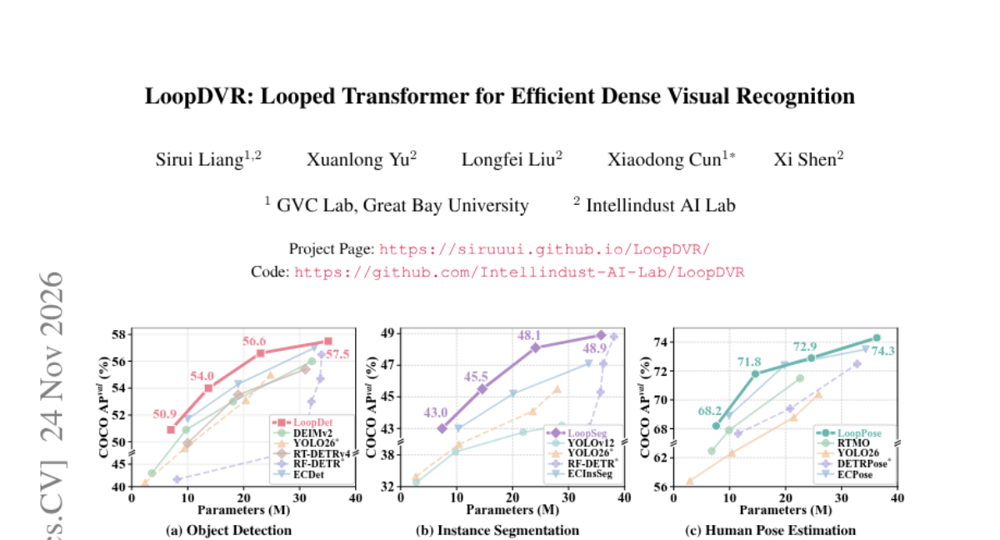
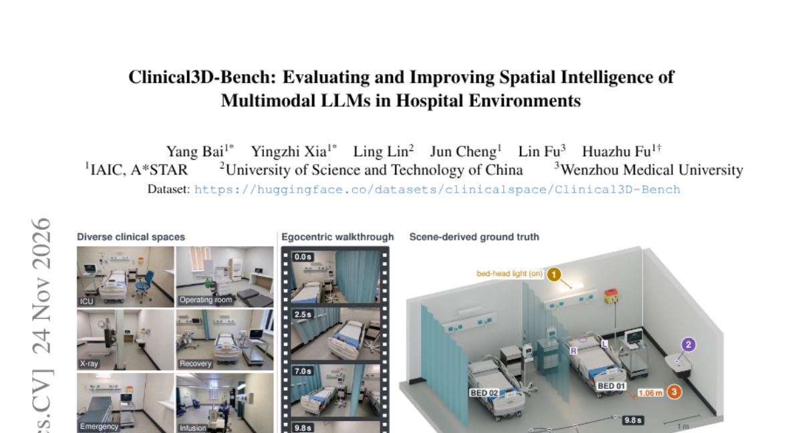

生命科学与医疗
X收录的主题是「生命科学与医疗」。
X收录的主题是「生命科学与医疗」。
X收录的主题是「安全、隐私与对齐」。
X收录的主题是「Anthropic · 智能体与工作流」。
X收录的主题是「强化学习与推理方法」。
机器之心报道的主题是「曾负责 Grok 大规模推理基础设施，马斯克旗下 xAI 前核心成员回归中科大」。
机器之心关注的问题是「通用大模型已经杀进来了，具身智能靠「微调续命」还能撑多久」。
标题称一家国产 AI 公司单季三项业绩指标破纪录、股价上涨 22%，但未给出公司名称、营收利润数字及同比基数，涨幅的时间区间也不明确。这些关键细节仍待财报与公告核实。
Google Cloud 出海峰会开放报名，标题仅给出活动信息，未披露议程、时间地点与参会方式等细节，内容价值需待官方页面确认。
今日材料以媒体标题为主，细节有限，需谨慎阅读。研究侧，OpenAI 称 GPT-6 在蛋白设计中展现推理与代码能力，实验显示对五个靶标存在结合证据；该说法来自机构自述，需论文与独立复现核验[1][9]。资讯侧标题涉及国产 AI 公司业绩与股价、Claude 生成形式化证明、Agent 检索评测准确率仅 24%、Gemini 4 辅助量子计算等，多缺摘要与原始出处[2][3][4][5]。另有行业活动与生态计划消息，建议先读原始论文、财报或官方公告再判断，标题中的突破与暴涨不宜直接采信[6][7][8]。
推荐理由 重点核对“开发-测试分离”协议下冻结程序是否完全无需语言模型推理，以及15个游戏中最好程序与GUI基线的13胜1平结果是否受开发预算和反馈利用方式影响。
DeepSeek 中文选读卡
读这条需要知道“编码智能体”：它在沙箱里反复改程序，再冻结程序独立测试，不靠推理时持续调用模型。本文接着问：编码智能体能否从游戏交互中开发出独立游玩程序。 研究提出Coding4Games基准，覆盖15款现代游戏，把开发与测试分开，并同时评估结果和开发过程；作者称每款取最佳程序与最强GUI基线比较。报告称最佳程序在13款胜过、1款打平；人类玩家在10款胜过所有智能体；还考察了开发预算影响。这些都是作者自报，没有对照或实验条件说明。 适用范围限于这15款游戏与所设接口、预算和基线，不能外推到其他游戏或真实部署；缺独立复现、预算敏感性细节和过程指标的可比基线。精读时值得核查：开发与测试如何隔离，测试时是否确实无模型推理。社区新闻线索不作证据。
语言模型智能体在多步任务中根据观察决定下一步行动，调用工具后再读取结果。理解这条循环，有助于区分计划出错、工具调用出错和反馈不足。
语言模型智能体在多步任务中根据观察决定下一步行动，调用工具后再读取结果。理解这条循环，有助于区分计划出错、工具调用出错和反馈不足。
有公开出处的英文主题讲解，可先补概念，再回到当前条目。

推荐理由 精读其按层间表示差异选择参数共享组、用组末层权重初始化和独立Loop Adapter保留深度特异变换的做法，并核对减少约28%参数与密集识别精度权衡的实验。
DeepSeek 中文选读卡
**概念与问题：** 读懂本条需知道“循环共享 Transformer 块”指不同层复用同一组参数；本文接着问：共享参数会不会破坏各层原本学到的不同变换。 **做了什么：** 作者提出 LoopDVR，把预训练密集视觉识别模型的 ViT 主干和解码器块按层间表示差异分组共享，保留最终主干块独立，并用组内末端层权重初始化、各层加独立 Loop Adapter；随后蒸馏表示并训练循环解码器。未见对照实验条件描述。 **证据与限制：** 作者报告在密集识别任务上取得更优精度—参数权衡，相比参考模型参数约减 28% 且精度有竞争力；LoopDet-S 为 50.9 box AP、7.0M 参数。适用范围、基线细节和独立复现仍缺；社区新闻不当作证据。精读值得核查：参数减少是否在相同训练与评测条件下比较。
先从原文明确列出的资料读起。可用相同的研究问题对照其任务、方法和评测条件，再回到当前条目。
作者在参考文献 [13] 中列出了这项工作。它与本文共同讨论looped、transformer，可对照两篇所用任务和评测条件。
作者在参考文献 [44] 中列出了这项工作。它与本文共同讨论transformer，可对照两篇所用任务和评测条件。
作者在参考文献 [8] 中列出了这项工作。它与本文共同讨论transformer，可对照两篇所用任务和评测条件。

推荐理由 精读Clinical3D-Bench如何用配对场景状态检验证据变化下的答案变化，并核对GeoJeV让MLLM从视频重建场景记忆并选择3D操作以缩小与医生差距的实验。
DeepSeek 中文选读卡
Clinical3D-Bench是模拟医院室内场景的空间推理基准，包含373个病房布局上的3368道题，分八种类型；答案由3D场景计算，并用配对场景状态检验模型是否随证据变化而改答，视频为照片级渲染，布局经十名医生筛查。作者报告：35个多模态大模型中，最佳开源和专有模型宏准确率分别为45.7%和53.6%，答案先验为40.8%，医生在子集上为79.0%；32个开源模型中27个在患者相对方向题上低于40%；用其44,750题训练集微调后，两个模型高出最佳专有模型16至20个百分点；输入3D地图几乎未被利用，替换为其他视频的地图也几乎不改变准确率；GeoJeV取得所评估模型中的最高准确率，缩小了与医生的差距。适用范围限于模拟病房和题面设计，缺少真实医院部署与第三方复现，医生对比也只是子集；社区新闻线索不作为研究证据。精读时值得核查：配对场景状态如何确保只改变相关证据。
先从原文明确列出的资料读起。可用相同的研究问题对照其任务、方法和评测条件，再回到当前条目。
作者在参考文献 [54] 中列出了这项工作。它与本文共同讨论multimodal、spatial，可对照两篇所用任务和评测条件。
作者在参考文献 [21] 中列出了这项工作。它与本文共同讨论evaluating、spatial，可对照两篇所用任务和评测条件。
作者在参考文献 [31] 中列出了这项工作。它与本文共同讨论spatial，可对照两篇所用任务和评测条件。